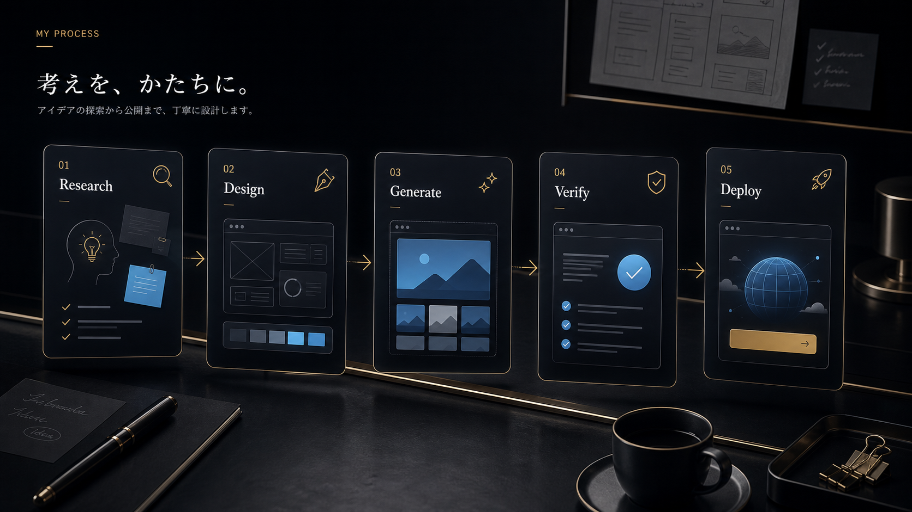
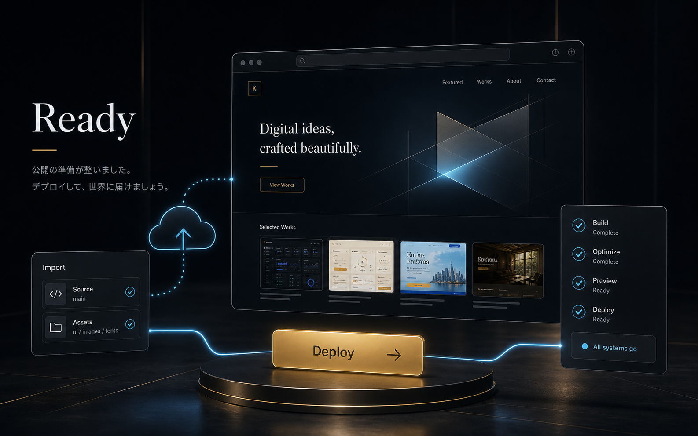

実画面には顧客情報が含まれるため、そのまま掲載できない。
Featured Project
Insight Studioを、実データなしで強く見せる。
01
Flagship SaaS
広告運用・競合分析・AI考察を統合した業務ダッシュボード。
顧客情報を含む動画キャプチャは使わず、架空データの再現UIで 価値の見せ方を設計します。伝えたいのは実数値ではなく、分析体験と意思決定の速さです。
- 広告KPI、競合LP分析、AI考察を1つの文脈で提示
- 実顧客名・社内数値を使わない安全なポートフォリオ素材
- プロダクトの構造、検証、運用品質を短時間で理解できる構成

架空データのUIモックで、分析フローと画面品質だけを再現する。
必要に応じて、マスク済み実スクショを補助素材として追加する。
Selected Works
黒いギャラリーに、作品ごとの温度だけを差す。
Portfolio Visual
生成画像は、作品の代替ではなく世界観の演出に使う。
作品カードは実際に開いて撮影したスクリーンショットを使い、GPT Image / Image Gen は ポートフォリオ自体の空気感、制作プロセス、公開準備のビジュアルに限定します。

Asset Policy
スクショは載せる。ただし、成功扱いと安全性を混同しない。
再現UI中心。顧客情報入り動画は参照止まり。実スクショはマスク済みだけを補助利用。
公開URLをブラウザで開いて撮影した画面を使い、生成画像を実績画像として扱わない。
ファーストビュー、CTA、主要セクションを見せ、作った事実より設計意図を伝える。
